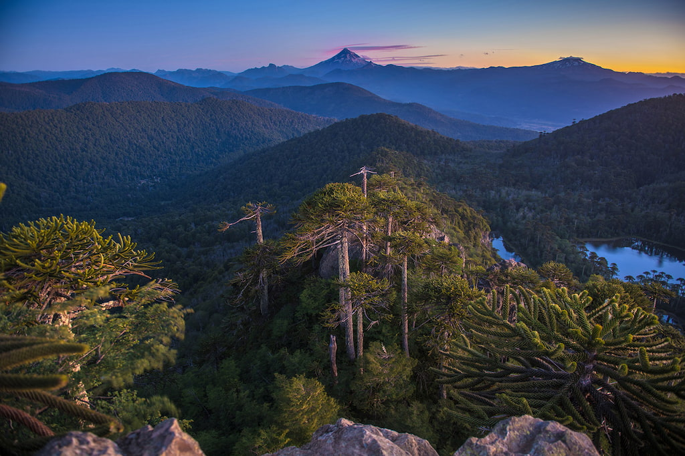
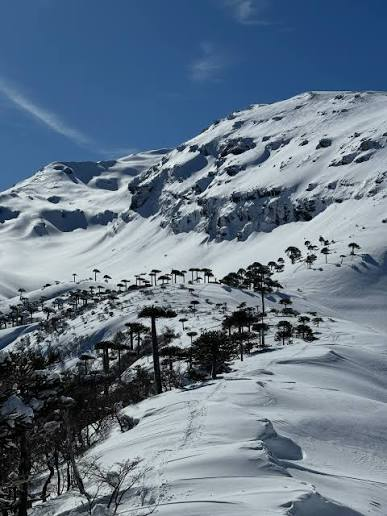
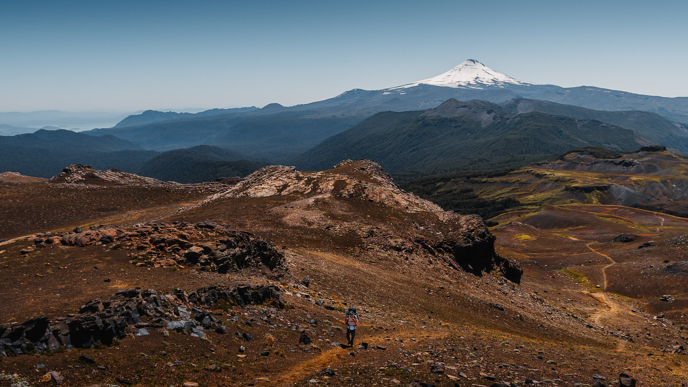

Ubicación: Santuario El Cañi, Pichares (Pucón)
Mirador El Cañi
Distancia: 18 km
Dificultad: Difícil
Ver detalle de Mirador El CañiRegión de La Araucanía
Fotografías ilustrativas de paisajes.

Ubicación: Santuario El Cañi, Pichares (Pucón)
Distancia: 18 km
Dificultad: Difícil
Ver detalle de Mirador El Cañi
Ubicación: Parque Nacional Conguillío
Distancia: 20 km
Dificultad: Difícil
Ver detalle de Sierra Nevada
Ubicación: Parque Nacional Villarrica
Distancia: 18 km
Dificultad: Difícil
Ver detalle de Travesía de las CumbresUbicación: Santuario El Cañi, Pichares (Pucón)
Recorrido de 18 km, de dificultad difícil.
Ubicación: Parque Nacional Conguillío
Recorrido de 20 km, de dificultad difícil.
Ubicación: Parque Nacional Villarrica
Recorrido de 18 km, de dificultad difícil.
Equipo básico
Protección
Hidratación
Abrigo